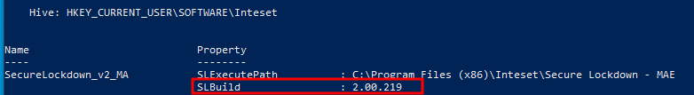
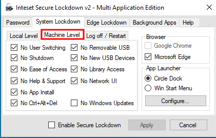
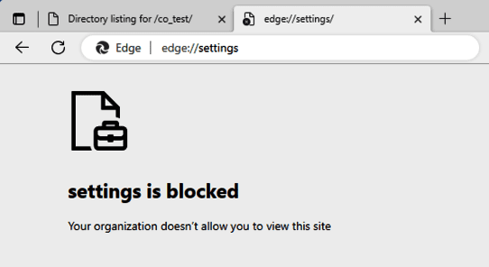
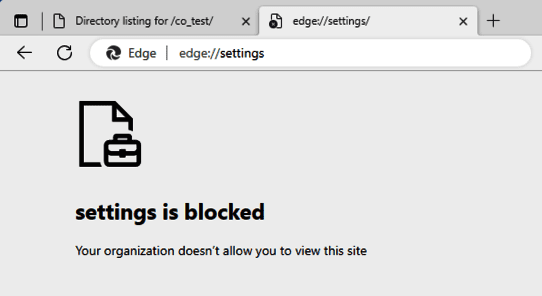
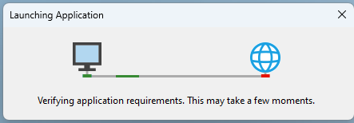

TL;DR: Inteset Secure Lockdown MAE hat ein paar Schwachstellen, die Anwenden bekannt sein sollten, um sich effektiv gegen möglich Angriffe zu schützen. Dieser Blogpost beschreibt die Probleme sowie die Lösungen.
Disclaimer: Dieser Blogpost wurde ursprünglich im DriveByte Blog veröffentlicht. Da die Firma allerdings liquidiert wird, habe ich beschlossen meine alten Blogposts umzuziehen, damit sie nicht verloren gehen.
Inhaltsverzeichnis
Vor einer Weile hatte ich ein Assessment, bei dem das Produkt als Software auf einem mit "Kiosk Mode" geschützten System betrieben wurde. Mir ist es dabei gelungen, einige Schwachstellen in dem Produkt, dass für den Kiosk Modus verwendet wurde zu identifizieren. Diese Schwachstellen werden im folgenden Artikel behandelt. Während meiner Meinung nach der Hersteller für die Behebung der angesprochenen Fehler verantwortlich ist, gibt es dennoch einige Möglichkeiten für Anwender der Software, sich vor diesen Angriffen zu schützen oder ihre Umgebung zumindest sicherer zu machen. Auch wenn es generell meiner Meinung entspricht, die Sicherheit eines Produktes nach Möglichkeit nicht von einem Kiosk Modus abhängig zu machen. Wie auch in vorhergegangenen Veröffentlichungen, war die ich sehr interessiert daran, die Schwachstellen in Zusammenarbeit mit dem Hersteller zu bearbeiten und zu veröffentlichen. Allerdings hat der Hersteller nach der ersten Kontaktaufnahme und dem Senden aller relevanten Informationen nicht mehr auf meine Kommunikation reagiert. Nach einiger Zeit, in der ich stetig versucht habe Informationen vom Hersteller zu erhalten, habe ich die Schwachstellen über meine damalige Firma, die DriveByte GmbH, an CERT/CC's Schwachstellenprogramm "VINCE"(Vulnerability Information and Coordination Environment) gemeldet. Leider konnten auch Sie keinen Kontakt zum Hersteller erreichen. Daher veröffentliche ich nun in enger Abstimmung mit CERT/CC die identifizierten Schwachstellen.
Inteset selbst, beschreibt ihre Software "Secure Lockdown - Multi Application Edition" wie folgt "Secure Lockdown - Multi Application Edition is a Windows Lockdown Utility that Allows Access to Only Desired Applications from a Highly Customizable Menu". Während sich die Lösung an einigen Punkten als recht wirkungsvoll erweist, konnten ich trotzdem Schwachstellen im Produkt aufdecken. Diese sollten von Inteset aufgegriffen und behoben werden.
Im "About"-Tab von Secure Lockdown wird lediglich "Version 2.0" ausgegeben. Es gibt allerdings einen Registry Key HKCU:\SOFTWARE\Inteset\ der build 2.00.219 angibt. Während unserem initialen Assessment war "Secure Lockdown - Multi Application Edition 2.00.219" ebenfalls die aktuellste Version.

Fangen wir mit den Einstellungen an. Für meine Analyse starten wir mit den folgenden Einstellungen. Diese sind nahezu identisch mit denen, die der Kunde gesetzt hatte. Allerdings habe ich hier noch die "Edge Lockdown" Option aktiviert.
Inteset kategorisiert die Einstellungen in verschiedene Tabs. Starten wir mit System Lockdown - Local Level.
Oh, und falls ihr dachtet, das Microsoft Edge geblockt wird, weil der Haken bei Edge nicht gesetzt ist - Das ist nicht der Fall. Kein Häkchen heißt für "Secure Lockdown", dass gar keine Sicherheitsmaßnahmen für Edge gesetzt sind. Das wäre direkt Game-Over. Wir hätten dann einfach die Möglichkeit aus edge heraus eine PowerShell zu öffnen, den "legacy mode" zu aktivieren und damit Code Execution zu erlangen, Files zu durchsuchen, schädliche Dateien herunterzuladen und auszuführen usw. Aus diesem Grund hielt ich es für angebracht, den "Lockdown" für Edge auch zu aktivieren. Wie ihr allerdings später sehen werdet, habe ich Wege gefunden schädliche Aktionen auszuführen. Trotz vollem Edge "Lockdown", wie er unten dargestellt ist.
Wie wir sehen, Downloads, Erweiterungen, Einstellungen etc. sind nun alle geblockt. Fullscreen nicht zu erlauben wäre nicht zwingend notwendig gewesen. Aber was solls ;-)
Als nächstes, schauen wir uns die System Lockdown - Machine Level Einstellungen an. Wie ihr seht, sind wir auch hier so restriktiv wie möglich.
Außerdem aktivieren wir die Circle Dock Option. Diese erlaubt uns, nur den Circle Dock auf dem abgesicherten Bildschirm anzuzeigen (keine Windows Task-Leiste), mit nur den Programmen, die wir erlauben möchten.

Es gibt auch noch weitere Optionen wie Log off / Restart, diese dienen aber nur dazu das System neu zu starten und zu definieren nach welchem Zeitraum ein User ausgeloggt wird (ja, genau wie der Name es sagt...).
Wir könnten zusätzlich noch Hintergrundapplikationen konfigurieren. Dies würde dann definieren, welche Prozesse laufen dürfen. Da diese Einstellung von unserem Kunden nicht gesetzt war, habe ich sie auch weder gesetzt noch ausführlich getestet. Was man allerdings wissen sollte, ist das mit diesen Einstellungen einfach alles laufen darf.
Ok, jetzt da wir wissen welche Einstellungen gewählt wurden, lasst uns sehen, wie wir Zugriff auf den Edge Browser erlangen und diesen Zugriff dann auch ausweiten können.
Hier gibt es eine Besonderheit. Die meisten lockdowns bzw. Kiosk Modes die ich bisher gesehen habe, waren recht einfach zu umgehen. Hier allerdings hat der Bypass eine Vorraussetzung. Die Applikation, die über das Circle Dock gestartet wird, muss cmd.exe starten. Das ist es, was wir bei unserem Kunden entdeckt haben. Die Applikation wurde über eine .bat Datei gestartet.
Ich weiß, was ihr jetzt denkt! Aaaah ok, wir beenden einfach den Programmstart in der CMD und können uns dann den Terminal-Zugriff zunutze machen. Ganz einfach.

Aber nein, ganz so einfach war es nicht. Wenn der Startvorgang des Programms in der CMD abgebrochen wurde, spuckte die CMD eine "Zugriff verweigert" Benachrichtigung. Es gibt dennoch Möglichkeiten. Wenn es darum geht, Lockdowns zu umgehen, ist es immer wichtig alle möglichen Menüs etc. in Augenschein zu nehmen, um eventuell ein Weg in den Explorer oder ähnliches zu finden. In diesem Fall war es mit der Hilfe von CMD möglich, einen Weg zu finden um den Edge Browser zu öffnen (Ja ich weiß, die Überschrift hatte das bereits verraten).
Wie bereits angemerkt, wurden einige Angriffsoberflächen recht effektiv abgeschaltet. So beispielsweise "Hilfe"-Menüs und andere Standardwege die jeder Analyst als erstes überprüft. Allerdings trifft das auf das Kontextmenü von CMD nicht zu. Daher konnte ich mit einem Rechtsklick in die Menüzeile der CMD zugriff auf deren "Eigenschaften" gelangen.

Danach gibt es hier mehrere Möglichkeiten, den als Standard eingestellten Webbrowser zu starten. In unserem Fall war das Edge.
Die ersten zwei Möglichkeiten sind im Tab Options zu finden. Wenn man die Links in "Learn more about legacy console mode" oder "Find out more about new console features" klickt, öffnet sich der Edge Browser und ruft die entsprechenden Seiten auf.

Das gleiche gilt für den Terminal Tab. Wir können mit dem Link in "Find out more about experimental terminal settings" den Edge Browser starten.


Und schon haben wir Zugriff auf den Browser.
Wie können wir das verhindern? Am einfachsten ist es natürlich, keine .bat-Dateien zum Starten von Programmen im Inteset lockdown zu verwenden. Zudem sollte Prozess-Whitelisting so etwas verhindern können. Das haben wir allerdings nicht ausführlich getestet.
Insgesamt bin ich der Meinung, dass das Öffnen von Edge geblockt werden sollte, anstatt es den Anwendenden zu überlassen darauf zu achten, wie sie Programme starten. Das trifft allerdings auf mehrere Schwachstellen in diesem Artikel zu.
Jetzt haben wir also Zugriff auf MS Edge. Und was jetzt? Was können wir damit erreichen? Können wir schädliche Dateien herunterladen und ausführen? Schauen wir mal.
Die zweite Schwachstelle in "Inteset Secure Lockdown Multi Application Edition" ist dass wir, sobald wir Zugriff auf Edge haben, beliebigen Code ausführen können. Die Software blockiert einige Dinge, wie beispielsweise den Zugriff auf die Browsereinstellungen, Downloads etc.
 


Was allerdings nicht blockiert wird, ist der Download und die Ausführung von sogenannten "ClickOnce" Anwendungen.
Was ist ClickOnce? Microsoft selbst beschreibt ClickOnce wie folgt "ClickOnce ist eine Bereitstellungstechnologie, mit der Windows-Anwendungen erstellt werden können, die eigenständig aktualisiert und mit minimaler Benutzerinteraktion installiert und ausgeführt werden." - MSDN
ClickOnce kann für mehrere Angriffe ausgenutzt werden. Wenn ihr mehr darüber erfahren wollt, lest gerne den fantastischen Blogpost von SpecterOps zu dem Thema, den ich während der Analyse auch selbst zurate gezogen habe (es gab auch etwa eine Woche vor unserem Assessment ein Webinar von SpecterOps zu dem Thema. Leider konnte ich aus zeitlichen Gründen nicht teilnehmen und dachte mir "Ach nicht so schlimm, wann werde ich das wohl jemals brauchen". Tja, das habe ich schnell bereut).
In unserem Fall wurde keine Verbotsliste bzw. "Allowlist" für Webseiten definiert. Daher können wir einfach eine simple ClickOnce Anwendung schreiben, hosten und ausführen.
using System;
using System.Diagnostics;
namespace ClickOnceTest
{
internal class Program
{
static void Main(string[] args)
{
var processStartInfo = new ProcessStartInfo();
processStartInfo.FileName = "powershell.exe";
using var process = new Process();
process.StartInfo = processStartInfo;
process.Start();
}
}
}
Klar, wir könnten hier etwas deutlich ausgefeilteres schreiben. Aber hey, das erfüllt seinen Zweck ¯\_(ツ)_/¯.
Jetzt können einfach die Anwendung hochladen, und sie auf unserem Zielsystem ausführen, um unseren Code zu starten.

Bis die Datei tatsächlich ausgeführt wird, müssen wir uns durch ein paar Dialoge klicken. Für eine Phishingkampagne wäre das also etwas aufwändig (zumindest, solange wir kein Zertifikat haben, mit dem wir unsere Anwendung signieren können. Oder solange wir nicht anderweitig etwas mehr Aufwand betreiben. Mehr dazu im obigen Blogpost von SpecterOps. Ernsthaft, ich empfehle wirklich ihn durchzulesen). Für unser Szenario ist das allerdings absolut kein Problem. Da wir physisch am System sind (deswegen ja der Kiosk Modus) und uns einfach selbst durch die Dialoge klicken können.



Uuuuund nachdem wir "Install" klicken, wird unser Code auf dem System ausgeführt und unsere PowerShell gestartet.

Herzlichen Glückwunsch, wir können also jeden Code ausführen, den wir ausführen wollen.
MITRE hat hierfür CVE-2024-29500 vergeben.
Auch hier bin ich der Meinung, dass dieses Problem vom Hersteller behoben werden sollte. Zumindest sollte es eine Option zum Verhindern von ClickOnce Ausführungen geben.
Aber bis dahin, könnt ihr die Ausführung von ClickOnce mit den Registry Key Einstellungen in \HKEY_LOCAL_MACHINE\SOFTWARE\Microsoft\.NETFramework\Security\TrustManager\ verhindern. Mehr Informationen dazu sind auch in diesem MSDN Artikel zu finden.
Wer bis hierhin aufmerksam gelesen hat, hat es vermutlich schon erkannt. Also machen wir es hier kurz. Wenn CMD für ein Problem gehalten und blockiert wird, sollte auch PowerShell blockiert werden. Mir ist bewusst, dass das nicht ganz einfach ist. Aber für einen "Secure Lockdown", sollte das definitiv in Betracht gezogen werden.
Ich musste diese Schwachstelle zwar mit dem Aufrufen von Edge und dem Ausführen von ClickOnce Anwendungen verbinden (was uns dann ja ohnehin bereits die Ausführung von beliebigem Code ermöglicht), trotzdem sollte PowerShell einfach grundlegend blockiert werden.
Aus meiner Sicht sollte dieses Problem von Inteset bearbeitet werden. Ansonsten gibt es zahlreiche Informationen zu Gruppenrichtlinien, mit denen PowerShell und PowerShell_ISE blockiert werden können.
Es gibt auch noch eine weitere Schwachstelle, die wir ausnutzen können, sobald wir einen Browser aufrufen können. Während man darüber streiten kann, ob die vorher genannten Schwachstellen eher Konfigurationsprobleme oder Schwachstellen in "Secure Lockdown" sind, ist das hier definitiv eine Schwachstelle.
Wie wir bereits in den Screenshots im Kapitel ClickOnce gesehen haben, sind file Links nicht zugelassen.

Das kann aber mit sogenannten UNCPaths wie \\127.0.0.1\C$ umgangen werden. Somit können wir das Dateisystem zugreifen und alle Dateien lesen, auf die der Benutzer unter dem "Secure Lockdown" ausgeführt wird, Berechtigungen hat.
MITRE hat hierfür CVE-2024-29502 vergeben.
Ich hoffe natürlich, dass Inteset diese Schwachstellen behebt. Trotzdem empfehle ich, falls möglich, einen "allowlist" Ansatz zu verwenden um nur bestimmte Seiten für Zugriffe zuzulassen.
In unserem Test erwies sich das als effektiv.


Das konfigurieren einer Allowlist kann (wenn sie minimalistisch gehalten und gepflegt wird) zudem die Angriffsoberfläche für den ClickOnce Vektor verringern.
Es kann wie gesagt darüber gestritten werden, ob diese Schwachstellen vom Hersteller behoben werden sollten, oder einfach Konfigurationsfehler sind. Unserer Meinung nach sind das allerdings ernste Probleme, die die meisten Anwendenden vermutlich einfach nicht auf dem Schirm haben (oder wie viele Leute kennt ihr, die ClickOnce unterbinden?). Daher vertreten wir die Überzeugung, dass der Hersteller diese Maßnahmen standardmäßig umsetzen sollte. Wir haben in einer realen Situation gesehen, wie wir durch diese Schwachstellen von "nur Zugriff auf die Applikation" zu "wir können beliebigen Code ausführen" gekommen sind. Wir denken daher, dass diese Probleme ernstgenommen werden sollten. Wie ihr vielleicht in vorhergegangenen Blogposts gesehen habt, sind wir immer sehr daran interessiert, gefundene Schwachstellen in enger Kooperation mit den Herstellern zu beheben und dann zu veröffentlichen, vor allem unter dem Motto "Responsible Disclosure". Leider war uns das in diesem Fall nicht möglich. Der Hersteller reagierte zwar auf unsere initiale Anfrage, meldete sich aber danach nie wieder zurück.
Daraufhin haben wir das CERT/CC eingeschaltet, die auch vergeblich versuchten mit dem Hersteller in Kontakt zu treten.
Da wir beide erfolglos geblieben sind, veröffentlichen wir die Schwachstellen jetzt in enger Kooperation mit CERT/CC. Wir glauben, dass diese Probleme Anwendenden und "Defendern" bekannt sein sollten, da sie für die meisten Schwachstellen auch selbst aktiv werden können, um die Risiken drastisch zu reduzieren oder die Schwachstellen gar ganz zu beheben.
Unser besonderer Dank gilt dem CERT/CC Team für ihre Bemühungen uns mit dem Hersteller in Kontakt zu bringen um die Probleme gemeinsam zu lösen.
29.09.2023 - Initialer Kontakt mit der Frage in welcher Form Schwachstellen gemeldet werden sollen
29.09.2023 - Der Hersteller antwortet, das Schwachstellen einfach an die support-E-Mail Adresse gesendet werden sollen
04.10.2023 - Initiale Meldung der Schwachstellen
30.10.2023 - DriveByte fragt Neuigkeiten beim Hersteller an
24.11.2023 - DriveByte fragt Neuigkeiten beim Hersteller an
08.12.2023 - Die Schwachstellen werden mittels CERT/CC's VINCE gemeldet
09.01.2024 - DriveByte fragt Neuigkeiten beim Hersteller an
26.01.2024 - CERT/CC schaltet sich ein
13.02.2024 - CERT/CC teilt uns mit, dass wir uns für eine Veröffentlichung am 10. März bereitmachen sollen
08.03.2024 - Finale Bestätigung, dass die Veröffentlichung bis auf weiteres auf den 10. März geplant ist, sofern der Hersteller sich nicht in das Verfahren einklinkt
14.03.2024 - Finales Release
24.04.2024 - Update: CVE Informationen wurden hinzugefügt